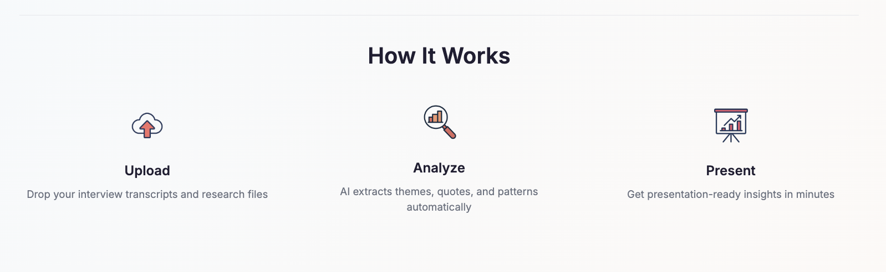
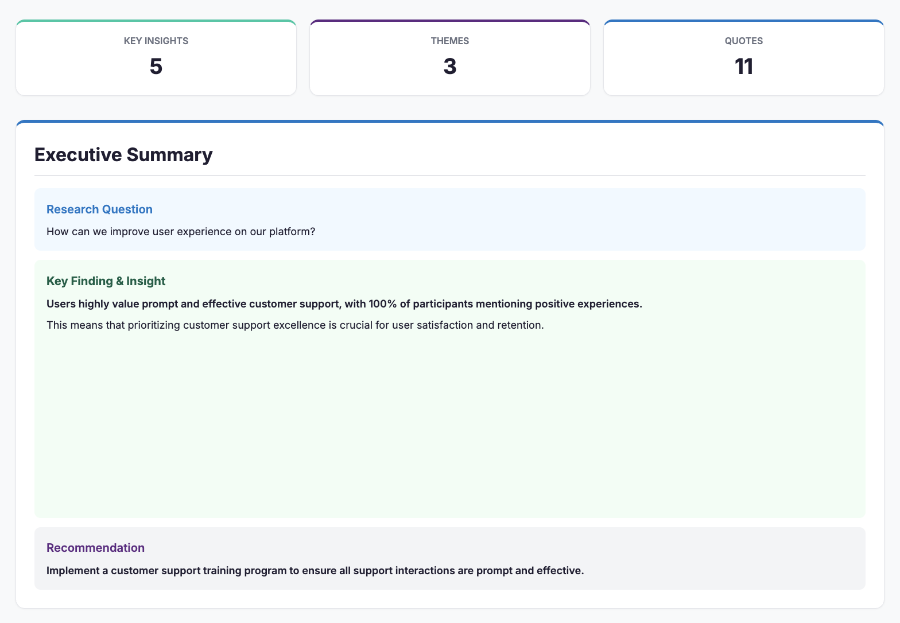
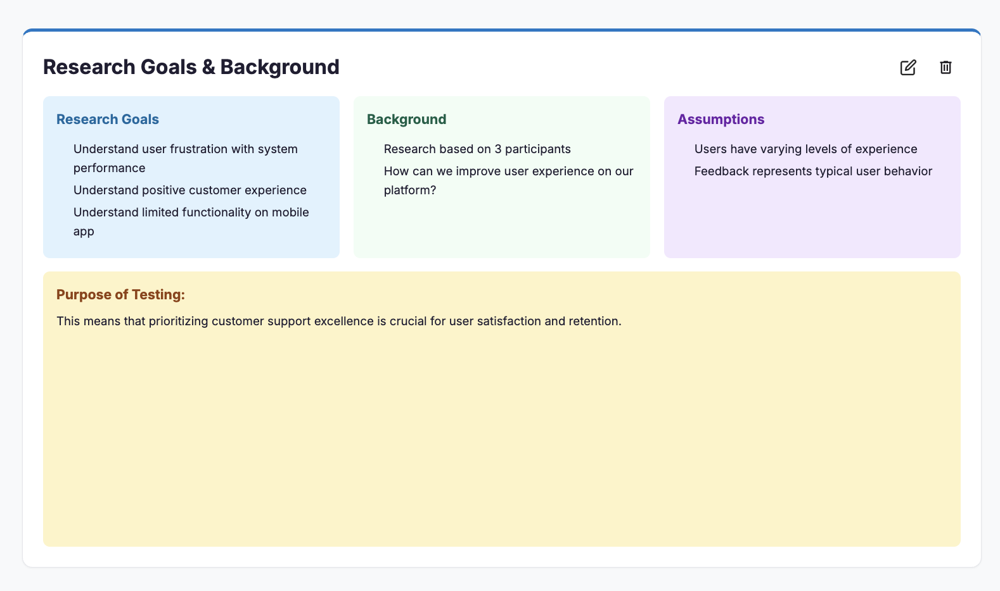
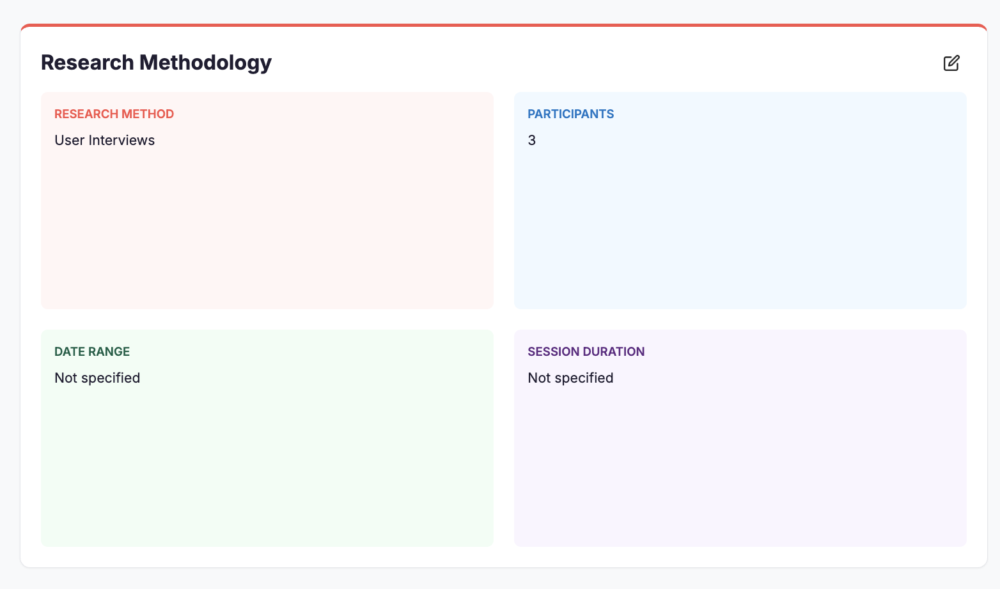

Live Product -- Try it now
Visit uxrcopilot.com →
The Problem
UX researchers spend 60% of their time on synthesis
After conducting user interviews, researchers face hours of manual work extracting quotes, identifying themes, and creating deliverables. This synthesis bottleneck delays insights and limits the number of studies teams can run.
As a UX researcher myself, I felt this pain constantly. I built UX Research Copilot to automate the synthesis process -- turning interview transcripts into structured insights in minutes instead of hours.
What It Does
Multi-Format Processing
Processes interview transcripts, surveys, and research documents (PDF, DOCX, TXT)
AI Insight Extraction
Uses GPT-3.5-turbo to extract key quotes, themes, and sentiment from transcripts
Theme Clustering
Groups related insights into thematic clusters with priority scoring
Report Generation
Generates executive summaries, detailed insights reports, and structured JSON data

Multi-Agent Architecture
The system uses four specialized AI agents that process data sequentially:
1
DocumentIngestor
Processes files and creates manageable text chunks for analysis
2
InsightAnalyzer
Uses GPT-3.5-turbo to extract quotes, themes, sentiment, and confidence scores
3
ThemeSynthesizer
Groups related insights and generates thematic summaries with priority levels
4
OutputFormatter
Creates structured reports and downloadable deliverables
Tech Stack
Python
FastAPI
Streamlit
GPT-3.5 Turbo
LangChain
Redis
Docker
Railway
Impact
80%
Time Saved
From hours to minutes
2-5
Processing Time
Minutes per session
4
Report Types
Auto-generated outputs
Sample Results
Real Session Example
Input: 2 interview transcripts (mobile app usability study)
- 4 key themes identified (Navigation Issues, Feature Requests, Performance, User Goals)
- 11 insights extracted with confidence scores
- Processing time: 2.1 minutes
- Reports generated: Executive summary, detailed insights, JSON data



Try It Yourself
Upload your research transcripts and get structured insights in minutes
Visit UX Research Copilot →What I Learned
Building for Yourself
Building a tool I personally needed kept me focused on real user value over feature creep
Multi-Agent Systems
Learned to design AI agent pipelines with clear responsibilities and error handling
Full-Stack Development
Went from concept to production app, handling backend, frontend, and deployment